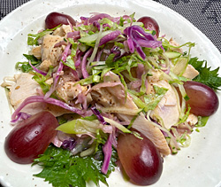

秋色棒棒鶏サラダ
- 調理時間：45分
- （一人当たり）
- カロリー：369kcal
- たんぱく質：21.6g
- 脂質：23.1g
- 炭水化物：23.7g
- 塩分：1.2g


＜2人分＞
- 鶏むね肉
- １枚(200g)
- 生姜
- １片
- 料理酒
- 大さじ２
- キャベツ（紫・緑）
- ５０g
- キュウリ
- １/２本
- レタス
- １枚
- 青シソ（飾り用）
- ３枚
- ブドウ
- ４～５粒
- ・練りごま
- 大さじ２
- ・しょうゆ
- 大さじ１
- ・砂糖
- 大さじ１
- ・酢
- 小さじ２
- ・すりおろし生姜
- 小さじ１
- ・ラー油
- お好みで
A


- 鍋に湯を沸かし、生姜、料理酒を入れ、沸騰させる。
鶏むね肉を入れて火を止める。
フタをして30分そのままにしておき、余熱で中まで火を通す。 - 鶏むね肉は中まで火が通れば、取り出し、細くさく。
- 野菜とブドウは細切りなど食べやすく切る。
- ゴマだれをつくる。
ボウルに練りごまを入れ、Aの調味料と生姜を混ぜ合わせる。 - 器に鶏肉と③の野菜とブドウを盛り付け、ゴマだれをかけて完成。
秋色棒棒鶏サラダ
鶏むね肉は、低脂肪・高たんぱくで、毎日の食事に取り入れたい食材のひとつ。特に鶏むね肉に含まれる「イミダゾールジペプチド」は、疲労感の軽減に役立つ成分として注目されています。今回は、旬のぶどうをプラスしたアイデアレシピに仕上げました。ぶどうの爽やかな甘みと酸味が、濃厚なごまだれと相性抜群！いつもの棒棒鶏を、季節感のある一品として楽しんでみてください。